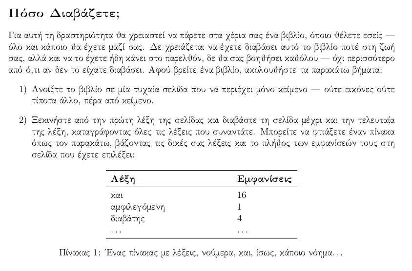
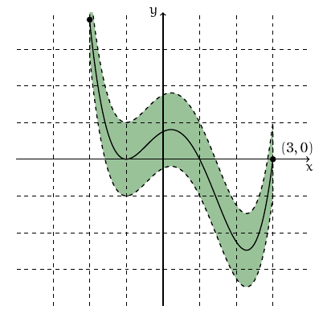
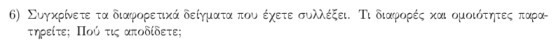
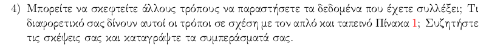
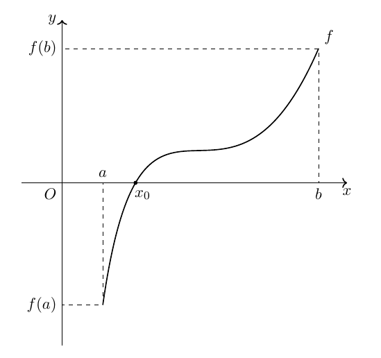
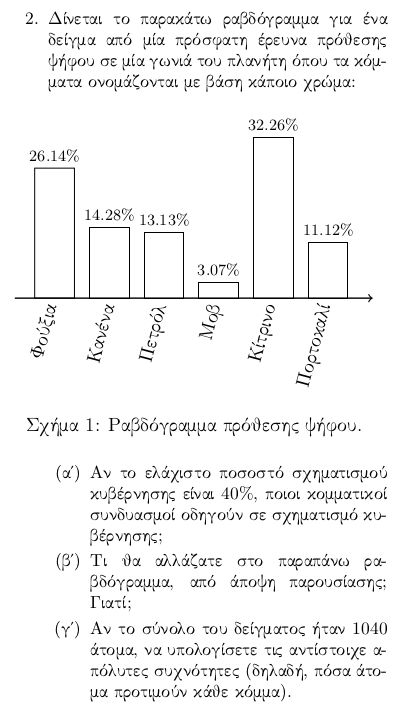
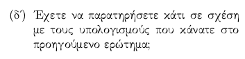
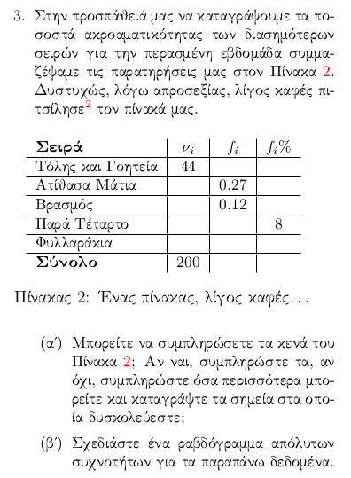

Πόσο Διαβάζετε;#

Ο πίνακας Προς τη Διάσωση του Karl Wilhelm Diefenbach.#
Τέτοιο καιρό σκέφτομαι συχνά πόσο παροπλιστική είναι η Γʹ Λυκείου σε ό,τι έχει να κάνει με τη διδασκαλία - των μαθηματικών, αλλά και εν γένει. Από τη μία, έχεις τόσα ενδιαφέροντα πράγματα να διδάξεις: Διαφορικό και Ολοκληρωτικό Λογισμό στο Γενικό Λύκειο, Στατιστική στο ΕΠΑΛ. Πράγματα που έχουν αμέτρητες εφαρμογές γύρω μας αλλά και, αφού το μέτρο της αξίας των μαθηματικών δεν είναι η «πρακτικότητά» τους, περιοχές της επιστήμης οι οποίες μπορούν να ξαναγεννήσουν αυτή τη μαγική αίσθηση της ανακάλυψης - τόσο στους μαθητές όσο και στους διδάσκοντες.
Αλλά, τι να το κάνεις, η Γʹ Λυκείου (Γενικού ή Επαγγελματικού) είναι, κατά κύριο λόγο, μία ατέρμονη πορεία προς την εξέταση, μία αδυσώπητη προπόνηση δίχως τέλος. Οπότε, ποια δημιουργικότητα, ποιος προβληματισμός; Πάνε περίπατο αυτά, παραγκωνισμένα από ένα παράλογα λογικό άγχος για αυτό που επίκειται. Και κάπου εκεί είναι που λίγο εκνευρίζεται κανείς: γιατί δεν μπορούμε να κάνουμε λίγο πιο ενδιαφέροντα αυτά τα πράγματα, γιατί δεν μπορούμε μέσα στην προπόνηση να ανακατέψουμε και λίγη από τη μαγεία της επιστήμης, της διδασκαλίας, της ανακάλυψης;
Τέλος πάντων, αυτός ο ορυμαγδός σκέψεων, προβληματισμών, ιδεών, όπως θέλετε πείτε τον, με οδήγησε φέτος στην απόφαση να ξεκινήσουμε με τη Γʹ ΕΠΑΛ, από τη θερινή κιόλας προετοιμασία να δουλεύουμε λίγο τα πράγματα πιο δημιουργικά. Και, λέγοντας «πιο δημιουργικά» εννοώ, να κάνουμε κι ένα φύλλο εργασίας, να δούμε και λίγα πράγματα στα σύνορα της εξεταστέας ύλης με την μαθηματική πραγματικότητα, να δούμε λίγα μαθηματικά «εν δράσει».
Μία Αρχή…#
Πολλά λέμε τόση ώρα, ας περάσουμε και στο «δια ταύτα». Λοιπόν, η αρχή φέτος έγινε με ένα φύλλο εργασίας, το οποίο μπορείτε να βρείτε εδώ, αν σας ενδιαφέρει - θα το ξεκοκαλίσουμε οσονούπω. Η ιδέα πίσω από το φύλλο εργασίας είναι να πάρουμε αφορμή από ένα απλό δείγμα και να ανακαλύψουμε κάποιες βασικές έννοιες της περιγραφικής στατιστικής, εστιάζοντας στις διάφορες συχνότητες (απόλυτες και σχετικές) και σε απλούς τρόπους γραφικής αναπαράστασης των δεδομένων. Το φύλλο εργασίας ξεκινά κάπως έτσι:

Αλήθεια, ποια λέξη να εμφανίζεται πιο συχνά στα διάφορα κείμενα που έχουν γραφτεί στη δημοτική τα τελευταία 10 χρόνια;#
Λοιπόν, αρχικά, έχουμε ένα τυπογραφικό - μπορείτε να το βρείτε; Πέρα όμως από αυτό, θέλουμε να πάρουμε στα χέρια μας ένα βιβλίο και να βρούμε μία σελίδα του που να έχει μόνο κείμενο. Πριν ξεκινήσουμε το μάθημά μας είχα ενημερώσει τα παιδιά να έχουν ένα βιβλίο μαζί τους και είχα πάρει κι εγώ κάποια μαζί μου σε περίπτωση που κάποιο ξεχνούσε να το φέρει. Αισίως, είχαμε ένα αρκετά διαφοροποιημένο δείγμα από βιβλία στην τάξη, από λογοτεχνικά μέχρι ιστορικά κείμενα, ελπίζοντας πως αυτό θα οδηγούσε σε κάπως διαφορετικά δείγματα, τόσο ως προς τα ποσοτικά όσο και ως προς τα ποιοτικά χαρακτηριστικά τους.
Ξεκινάμε, λοιπόν, αρχίζουν τα παιδιά να διαβάζουν τις σελίδες που έχουν επιλέξει στην τύχη, και να συμμαζεύουν τα όσα διαβάζουν σε πινακάκια σαν και αυτό που τους προτείνεται στο ίδιο το φύλλο εργασίας. Εδώ κάπου να πούμε ότι συντάσσοντας το φύλλο προβληματίστηκα λίγο ως προς το αν έπρεπε να τους δώσω ένα υπόδειγμα πίνακα ως μπούσουλα ή να τα αφήσω ελεύθερα να βρουν έναν δικό τους τρόπο να συγκεντρώσουν τα δεδομένα. Νομίζω ότι περισσότερο από δική μου ανασφάλεια επέλεξα να κατευθύνω λίγο περισσότερο την αναζήτησή τους - και, ίσως, αποσκοπώντας στο να επιταχύνουμε λίγο τη διαδικασία.
Τέλος πάντων, νωρίς-νωρίς στην εφαρμογή του φύλλου εργασίας φάνηκε ένα πρόβλημα που δεν είχα προβλέψει: η ταχύτητα ανάγνωσης των παιδιών. Κατά μέσο όρο, μου έκανε εντύπωση πόσο αργά προχωρούσε το τμήμα, ο καθένας με τη σελίδα του, για άλλους μικρή και για άλλους πιο μεγάλη, ανάλογα με το βιβλίο που είχαν επιλέξει. Στο τέλος, για να μην χάσουμε περισσότερο χρόνο από όσο χρειαζόταν στη συλλογή δεδομένων και για να μας μείνει ο απαραίτητος χρόνος για την περιγραφική ανάλυση του δείγματος, χρειάστηκε να συμφωνήσουμε ότι αρκούσε και μία σχετικά μεγάλη παράγραφος ή δύο κάπως μικρότερες και όχι ολόκληρη η σελίδα.
Αυτό, όπως φαντάζεστε, δημιουργεί κάποια θέματα και παρακάτω στο φύλλο εργασίας, καθώς όσο μικραίνει το δείγμα, τόσο περιορίζεται η ποικιλία των λέξεων αλλά μειώνεται και η πιθανότητα επανεμφάνισης «ζουμερών» λέξεων, πέρα από συνδέσμους, άρθρα, αντωνυμίες κ.λπ. Οπότε, πρώτη σημείωση προς ναυτιλλομένους: μικρότερο κείμενο ως δείγμα και, ίσως, όπως ζητά και η πρώτη άσκηση για το σπίτι του φύλλου εργασίας (2η σελίδα) αντί να καταγράφουμε τη συχνότητα εμφάνισης κάθε λέξης, να είναι καλύτερο να καταγράφουμε τη συχνότητα εμφάνισης κάθε γράμματος του αλφαβήτου ως πρώτο γράμμα μίας λέξης.
Με τον έναν ή τον άλλο τρόπο, έχουμε συλλέξει ένα δείγμα, μικρότερο από το αναμενόμενο, και έχουμε ήδη κάνει την καταγραφή των απόλυτων συχνοτήτων - χωρίς, βέβαια, να έχουμε ακόμα αναφέρει τίποτα περί συχνοτήτων, \(\nu_i\) κ.λπ., αυτά μένει να «ανακαλυφθούν» σε λίγο.
Κουβεντολόι…#
Επόμενο ζητούμενο είναι να παρατηρήσουμε λίγο τι έχουμε κάνει ως τώρα:

Ίσως λίγο ανοικτό ερώτημα, αλλά, πόσο κλειστή μπορεί να είναι μία ερώτηση που αποσκοπεί σε διερεύνηση;#
Πλατιά ερώτηση, υποψήφιο σημείο για να ξεφύγει το μάθημα, θα έλεγε κανείς. Ωστόσο, δε γίνεται να αφυπνίσουμε λίγο τη φαντασία των παιδιών χωρίς τέτοια ερωτήματα. Τέλος πάντων, διάφορες ενδιαφέρουσες παρατηρήσεις έγιναν, σε σχέση με το ποιες λέξεις εμφανίζονται πιο συχνά, ποιες λιγότερο, κατά πόσο αυτό είναι αναμενόμενο και άλλα πολλά. Αισίως, θα έλεγε κανείς, καθώς το πέμπτο ερώτημα είχε μπει ακριβώς σαν δικλείδα ασφαλείας, σε περίπτωση που αυτά τα ζητήματα δεν είχαν τεθεί ως τότε στο τραπέζι:
Μία δικλείδα ασφαλείας.#
Σε μελλοντική έκδοση του φύλλου, ίσως θα μπορούσε αυτή η ερώτηση να φύγει, καθώς μάλλον τα περισσότερα παιδιά φάνηκε να πηγαίνουν σχεδόν αυτοβούλως προς αυτή την κατεύθυνση, χωρίς ιδιαίτερη παρότρυνση. Ίσως, βέβαια, κάποιοι να είχαν ρίξει και καμία κλεφτή ματιά παρακάτω για να αντλήσουν έμπνευση, οπότε, ποιος ξέρει, μία ακόμα δοκιμή του φύλλου χωρίς την εν λόγω ερώτηση μπορεί και να χρειάζεται.
Αφού συζητήσαμε λίγο αυτά τα προφανή, αρκετά παιδιά παρατήρησαν ότι μπορούσαν από το δείγμα τους να αναδομήσουν το κείμενο, σε γενικές γραμμές. Δηλαδή, διαβάζοντας από πάνω προς τα κάτω τις λίστες τους, μπορούσαν να ανακαλέσουν μεγάλα τμήματα του κειμένου, εκφράσεις που τους είχαν κάνει εντύπωση και άλλα διάφορα. Η αλήθεια είναι ότι πιάστηκα λίγο εξαπίνης και δεν ήξερα πώς να αξιοποιήσω αυτή την παρατήρηση πέρα από μία σύντομη κουβέντα που έγινε για τη σύγκριση των διαφόρων δειγμάτων - σημείωση για μελλοντική χρήση και αυτή.
Και κάπως έτσι, περάσαμε πρώτα στην έκτη ερώτηση:

Ίσως κι αυτή η ερώτηση να μπορούσε να έρθει νωρίτερα…#
Η αλήθεια είναι ότι οι σχετικά προφανείς παρατηρήσεις έγιναν νωρίς-νωρίς: λέξεις όπως «και», «ο/η/το» κ.λπ. εμφανίζονταν σε όλα σχεδόν τα δείγματα συστηματικά συχνότερα από άλλες λέξεις, πράγμα που για κάποιους ήταν αναμενόμενο από την αρχή, για άλλους, δε, ήταν κάτι που δεν είχαν σκεφτεί τόσην ώρα, αλλά φαινόταν παραπάνω από λογικό να είναι έτσι τα πράγματα.
Μετά, παρατηρήσαμε ότι οι λέξεις που εμφανίζονταν πιο αραιά ήταν, σε έναν βαθμό, και οι πιο χαρακτηριστικές κάθε κειμένου. Για παράδειγμα, η λέξη «νύχια» δεν εμφανιζόταν παρά σε ένα μόνο κείμενο, που περιέγραφε ένα παράξενο πτηνό της Νότιας Αμερικής, ενώ η λέξη «ναπολιτάνικα» εμφανιζόταν επίσης σε ένα μόνο κείμενο - που, αν δεν το καταλάβατε, μιλούσε, εν πολλοίς, για τη Νάπολη.
Έχοντας κάνει μία πολύ ωραία κουβέντα ως τώρα, περάσαμε λίγο άκομψα, γιατί την είχαμε προσπεράσει, στην τέταρτη ερώτηση:

Με ξεχάσατε;! Είμαι η τέταρτη ερώτηση!#
Εδώ τα πράγματα ήταν λίγο μαγκωμένα στην αρχή, σε έναν μεγάλο βαθμό γιατί κι εγώ επεδίωξα να εστιάσουμε σε αυτή την ερώτηση ενώ η κουβέντα μας είχε πάρει μία άλλη τροπή - την είχαμε προσπεράσει διακριτικά. Ίσως έχρηζε διαφορετικής διαχείρισης το ζήτημα, αλλά αυτό θα το σκεφτούμε περισσότερο παρακάτω. Μετά από λίγο, άρχισαν να πέφτουν οι πρώτες ιδέες: σημειόγραμμα. Η αλήθεια είναι ότι περίμενα τα περισσότερα παιδιά να πάνε κατευθείαν προς το ραβδόγραμμα, μιας και είναι μία τυπική αναπαράσταση δεδομένων, οι εκλογές ήταν πρόσφατες, άρα θα είχαν δει γύρω τους πολλά τέτοια διαγράμματα (ότι τα παιδιά, δηλαδή, βλέπουν ειδήσεις και πολιτικά ρεπορτάζ με μανία στο μυαλό μου…). Τέλος πάντων, δεν ήταν έτσι τα πράγματα, τελικά, και υπήρχε ένας προφανής λόγος.
Τα περισσότερα παιδιά είχαν επιλέξει, κατά την καταγραφή των δεδομένων, να σημειώνουν τις λέξεις και να τραβούν δίπλα τους κάθετες γραμμές, μία για κάθε εμφάνιση. Οπότε, η ιδέα να κρατήσουμε ακριβώς αυτή την αναπαράσταση και για μία άμεση οπτικοποίηση των δεδομένων ήταν προφανής. Και κάπως έτσι, το κατεξοχήν αουτσάιντερ της ύλης, ήρθε απροσδόκητα στο προσκήνιο. Μετά από λίγη συζήτηση για τις διάφορες εναλλακτικές, καθώς αν είχαμε χρησιμοποιήσει ένα μεγαλύτερης έκτασης κείμενο το να βάζουμε γραμμούλες και τελίτσες θα ήταν, το ελάχιστο, κουραστικό, φτάσαμε και σε πιο «τετριμμένες» απαντήσεις, όπως το ραβδόγραμμα συχνοτήτων.
Και οι Συχνότητες;#
Πέρα από όσα σαφώς και απερίφραστα ζητά το φύλλο εργασίας, υπάρχουν έννοιες που κρύβονται από πίσω και τις οποίες προσδοκούμε να ανακαλύψουμε στην τάξη «ζωντανά». Εδώ, όπως προδίδουν και οι σχετικές ασκήσεις, αυτές οι έννοιες περιστρέφονται γύρω από τη συχνότητα εμφάνισης μίας παρατήρησης, αρχικά απόλυτης και, στη συνέχεια, σχετικής. Η αλήθεια είναι ότι η μετάβαση από τις απόλυτες συχνότητες, τις οποίες ήδη είχαν καταγράψει τα παιδιά συλλέγοντας λέξεις, στις σχετικές συχνότητες ήταν ομαλή, καθώς η ανάγκη να συγκρίνουμε διαφορετικά δείγματα ως προς τα διάφορα χαρακτηριστικά τους μας ώθησε φυσιολογικά προς τα εκεί. Μάλιστα, προέκυψε και σαν ιδέα από συζητήσεις μέσα στην τάξη ότι για να συγκρίνουμε δύο διαφορετικά δείγματα, δεν μπορούμε να αξιοποιήσουμε ένα απόλυτο μέγεθος, καθώς κάποιες σελίδες ήταν πιο πυκνογραμμένες, με αποτέλεσμα κάποια παιδιά να έχουν στα χέρια τους μεγαλύτερα δείγματα και άλλα αισθητά μικρότερα.
Από αυτή την άποψη, το φύλλο εργασίας πέτυχε εν μέρει τον σκοπό του, καθώς οι διάφορες βασικές συχνότητες προέκυψαν κάπως φυσιολογικά στα πλαίσια του προβλήματος. Αυτό ωστόσο δε σημαίνει ότι δεν προέκυψαν και διάφορα προβλήματα κατά την εφαρμογή του στην τάξη, αρχής γενομένης από τη φύση του προβλήματος καθεαυτού. Εκ των πραγμάτων, η καταγραφή των συχνοτήτων εμφάνισης των λέξεων σε μία σελίδα ενός βιβλίου αποδείχθηκε, γενικά, δυσκολότερη και πιο χρονοβόρα διαδικασία από όσο είχα υπολογίσει στο σπίτι, συμμαζεύοντας λίγες λέξεις από μία σελίδα μόνος μου. Ένα ίσως καλύτερο σενάριο για την επόμενη φορά, όπως είπαμε και παραπάνω, μπορεί να είναι αυτό που παρουσιάζεται στην πρώτη άσκηση:

Μία μάλλον απλούστερη και συντομότερη εναλλακτική.#
Τα πλεονεκτήματα της παραπάνω επιλογής είναι, τουλάχιστον «στα χαρτιά», τα εξής δύο:
Δε χρειάζεται κανείς να διαβάσει προσεκτικά όλο το κείμενο παρά μόνο να κοιτάζει το πρώτο γράμμα κάθε λέξης για να ολοκληρώσει την καταγραφή των δεδομένων, εξοικονομώντας έτσι χρόνο.
Το δείγμα περιέχει το πολύ 24 παρατηρήσεις, γεγονός που το κάνει κάπως μικρότερο και ευκολότερα διαχειρίσιμο και πιο προβλέψιμο από το δείγμα των μεμονωμένων λέξεων που εμφανίζονται μέσα στο ίδιο κείμενο.
Αυτά, βέβαια, δε σημαίνει ότι είναι απαραίτητα πλεονεκτήματα, καθώς, ένα πιο «στρυφνό» δείγμα μπορεί να αναγκάσει κάποιον να αναλάβει την πρωτοβουλία σε διάφορες περιστάσεις και να εξερευνήσει νέες περιοχές της περιγραφικής στατιστικής. Για παράδειγμα, κάποια παιδιά αναρωτήθηκαν αν έχει νόημα οι διάφορες συντακτικές μορφές μίας λέξης, π.χ., «υπάρχει» και «υπήρχε», να θεωρηθούν όντως ως διαφορετικές λέξεις. Προφανώς, αυστηρά μιλώντας, ναι, είναι διαφορετικές λέξεις, ωστόσο αυτό το σημείο, σε άλλο πλαίσιο, θα μπορούσε να αποτελέσει εφαλτήριο για την εισαγωγή της ιδέας της ομαδοποίησης δεδομένων, ένα εφαλτήριο που δεν μπορεί να προκύψει από το πιο «χτενισμένο» δείγμα της Άσκησης 1 του φύλλου εργασίας.
Τέλος πάντων, όπως πάντα, σε αυτές τι περιπτώσεις, ο καλύτερος τρόπος να αποφασίσει κανείς είναι η δοκιμή. Άλλωστε, αυτό το φύλλο εργασίας, δούλεψε με τον τρόπο που δούλεψε στο συγκεκριμένο κοινωνικό και χρονικό πλαίσιο. Σε άλλο τμήμα μπορεί να προέκυπταν άλλα προβλήματα, μπορεί να ήταν μία παταγώδης αποτυχία ή ένα τεράστιο σουξέ, ποιος ξέρει;
Και οι Ασκήσεις;#
Πριν κλείσουμε την κουβέντα μας, ας πούμε δυο λόγια για τις λίγες ασκήσεις που συνοδεύουν το φύλλο εργασίας. Η πρώτη άσκηση, όπως είπαμε και παραπάνω, έχει λίγο ως πολύ στόχο να επαναλάβουν τα παιδιά τη διαδικασία που κάναμε στην τάξη σε ένα παρόμοιο πλαίσιο, απλά ίσως λίγο πιο απλό. Μέσα από αυτό, η ελπίδα είναι ότι θα μπορέσουν να εστιάσουν περισσότερο στα όσα ειπώθηκαν στην τάξη και, ταυτόχρονα, να πάνε την σκέψη τους ένα βήμα παρακάτω. Κάπως, με άλλα λόγια, σαν ένα «replay» του μαθήματος.
Η δεύτερη άσκηση έχει κάπως πιο πεζές και επίκαιρες ρίζες:

Τα τρία πρώτα ερωτήματα…#
Έχει κι άλλο ένα ερώτημα η άσκηση, θα το δείξουμε σε λίγο - δε χώραγε με κάποιον κομψό τρόπο στην εικόνα, καθώς είναι στη διπλανή στήλη. Ας αφήσουμε, όμως, τη στοιχειοθεσία κατά μέρους τώρα και ας πάμε στο ζουμί. Έχουμε κάποια υποθετικά ποσοστά από κάποια κόμματα, συγκεντρωμένα σε ένα ραβδόγραμμα σχετικών συχνοτήτων επί τοις εκατό. Το πρώτο ερώτημα έχει κυρίως χαρακτήρα ζεστάματος, να βάλουν τα παιδιά τα χέρια τους πάνω στο ραβδόγραμμα (μεταφορικά, ίσως) και να παίξουν λίγο με τους αριθμούς που έχουν στη διάθεσή τους.
Το δεύτερο ερώτημα, με τη σειρά του, αποσκοπεί να αφήσει το πεδίο ελεύθερο στα παιδιά να παίξουν λίγο με το γράφημα, να αναρωτηθούν τι μπορεί να έχει σημασία σε επίπεδο καλών πρακτικών. Πάλι, ένα ερώτημα όχι άμεσα σχετικό με την εξεταστέα ύλη, αλλά με την ίδια την πρακτική της οπτικοποίησης. Για παράδειγμα, μπορεί κανείς να πει ότι θα ήταν καλύτερο οι ράβδοι να ταξινομηθούν ως προς το ύψος τους, για να μπορεί κανείς εύκολα να απαντήσει ερωτήματα του τύπου «Ποιο ήταν το τρίτο κόμμα σε ψήφους;». Ή θα μπορούσε κανείς να εισηγηθεί διάφορα άλλα πράγματα, π.χ., χρώματα, ή να σχεδιαστεί το ραβδόγραμμα οριζόντιο κ.λπ.
Το τρίτο ερώτημα αποσκοπεί στο να σπάσει λίγο νεύρα, καθώς απαιτεί βαρετές πράξεις. Από τη μία, είναι μία γυμναστική με τους τύπους των διαφόρων συχνοτήτων που έχουμε δει μέσα στο μάθημα. Για παράδειγμα, το πρώτο κόμμα σε αυτή την περίπτωση παίρνει:
ψήφους. Προφανέστατα, τα παιδιά εδώ πρέπει να πάρουν μία απόφαση: πώς θα στρογγυλοποιήσουν τα αποτελέσματα που βρίσκουν; Αυτός, αν και καθαρά πρακτικός προβληματισμός, έχει την αξία του, καθώς, μετά, μπορεί να οδηγήσει και στον αντίστροφο: πώς προέκυψαν αυτά τα ποσοστά, δεδομένου ότι πρώτα είχαμε στα χέρια μας τις ακέραιες απόλυτες συχνότητες και έπειτα προέκυψαν οι σχετικές συχνότητες (επί τοις εκατό) που δε δίνουν ξανά τις αρχικές ακέραιες απόλυτες συχνότητες;
Αυτόν ακριβώς τον προβληματισμό, σε περίπτωση που δεν προκύψει, προσπαθεί να «δημιουργήσει» το τέταρτο και τελευταίο ερώτημα:

Να το και το τέταρτο ερώτημα!#
Πρακτικά, είναι μία επέκταση του τρίτου ερωτήματος, σε περίπτωση που είτε οι μαθητές δεν παρατηρήσουν ότι οι απόλυτες συχνότητες βγαίνουν μη ακέραιοι ή πώς στα κομμάτια κανείς πήρε αυτά τα ποσοστά ενώ είχε στην αρχή ολοστρόγγυλους ακέραιους αριθμούς. Γενικά, αυτή η άσκηση έχει ως στόχο κυρίως να εστιάσει σε πρακτικά ζητήματα περί συχνοτήτων, οπτικοποιήσεων κ.λπ.
Η επόμενη άσκηση είναι λίγη πιο τυπική, σε κλίμα κάπως πιο εξεταστικό:

Ένα μικρό πινακάκι, για ζέσταμα…#
Κλασική άσκηση με συχνότητες, λείπουν, βέβαια, οι αθροιστικές συχνότητες, αλλά δεν ήταν στις προθέσεις του φύλλου εργασίας να τις συζητήσουμε ακόμα, και ούτε τις συζητήσαμε - δε χρειάστηκαν κάπου, θα προκύψουν φυσιολογικά στο άμεσο μέλλον. Το βασικό εδώ είναι να δούμε πώς μπορούμε να αξιοποιήσουμε τους δυο-τρεις τύπους που έχουμε κάνει στην τάξη για να συμπληρώσουμε τα κενά. Η τελευταία γραμμή είναι προφανώς όλη κενή για να οδηγηθούν τα παιδιά να αθροίσουν τις υπόλοιπες συχνότητες που θα έχουν υπολογίσει για να βρουν και την τελευταία αυτή συχνότητα (πόσο πιο κλασικό κόλπο;)
Η τέταρτη και τελευταία άσκηση είναι απλά μία ελεύθερη διερεύνηση ενός προβλήματος που θα επιλέξουν τα ίδια τα παιδιά - καλώς εχόντων των πραγμάτων, πάντα. Στόχος είναι κυρίως να παίξουν στο σπίτι με διάφορα δεδομένα που θα είναι κάπως περισσότερο του ενδιαφέροντός τους, αξιοποιώντας τα εργαλεία και τις έννοιες που αναπτύξαμε στην τάξη και να προσπαθήσουν να τα πάνε και λίγο παρακάτω.
Κλείνοντας#
Συμμαζεύοντας λίγο τα πράγματα, εντάξει, συμπαθητικό φύλλο εργασίας, σε γενικές γραμμές, αλλά φαίνεται να υπάρχει ανάγκη για δομικές αλλαγές - όπως και σε κάθε μεταπολιτευτική κυβέρνηση. Βασικότερη είναι η αλλαγή, ίσως, του ίδιου του πλαισίου της και των δεδομένων που συλλέγουν οι μαθητές, είτε με κάποια παραλλαγή του υπάρχοντος είτε και σε κάποιο τελείως διαφορετικό πλαίσιο. Αντίστοιχα, ένα ρεκτιφιέ και στις επί μέρους ερωτήσεις, είτε με περισσότερη στόχευση προς αυτά που αποσκοπούν να διδαχθούν είτε, αντίθετα, προς μία ακόμα πιο ανοικτή και διερευνητική κατεύθυνση.
Μέχρι το επόμενο «μάθημα», καλό διάβασμα!